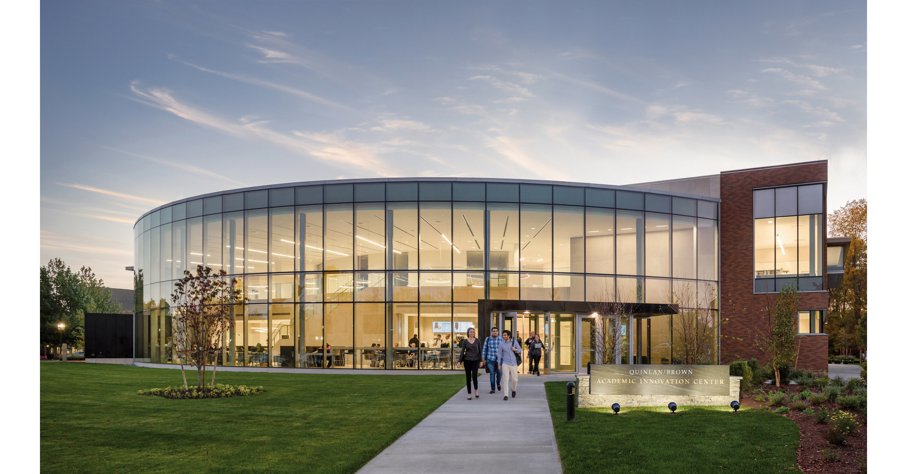

My Biography
Hello, my name is Bradley! I served in the United States Marine Corps for two years.
I was also a first responder both pre and post Covid.
I am a Cyber Security student at NEIT.
I hope that I will be able to complete my degree quick and retain as much as possible.
My Schools
I graduated from CCRI in 2023 with my associates in General Studies. I also attended Bryant University for a year before switching schools. Curretley, I attend NEIT for Cyber Security.
- CCRI - 2023
- NEIT - 2023 to Current
- Bryant University - 2022
CCRI

New England Institiute of Technology

Bryant University
Hobbies
My Hobbies are wide in veriety. I enjoy playing Diablo 4 with friends, archery, and also spending time with my wife Erin.
- Diablo 4
- Archery
- Love